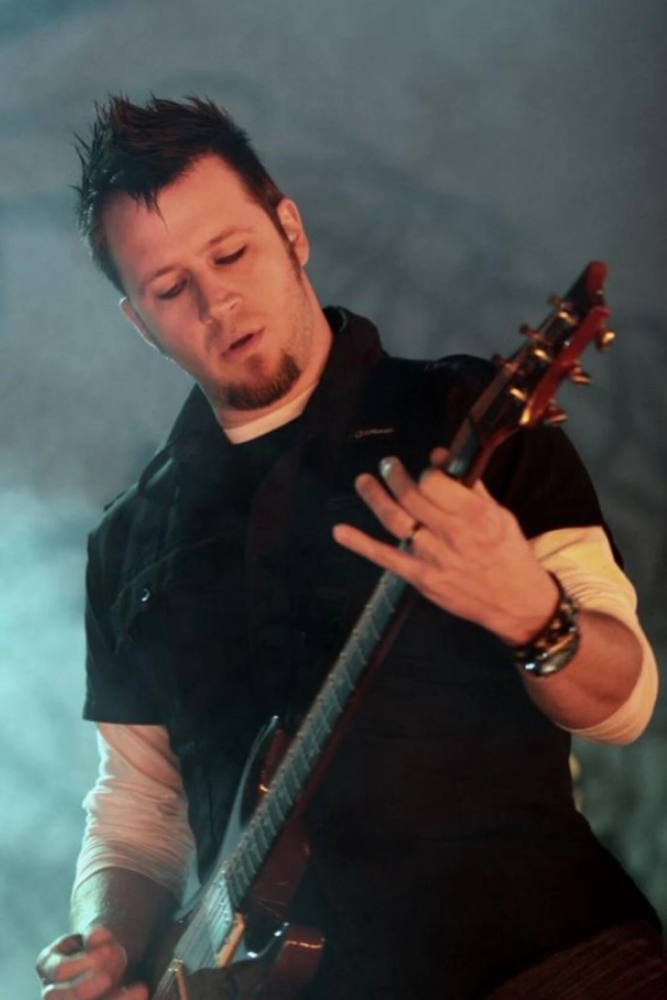

E
V
A
N
E
S
C
E
N
C
E
Amy LeeAmy Lynn Hartzler (nacida Amy Lynn Lee; Riverside, California; 13 de diciembre de 1981), más conocida como Amy Lee, es una cantante, pianista de formación clásica, diseñadora y compositora estadounidense. Es la cofundadora y vocalista de la banda estadounidense de metal alternativo Evanescence. Sus influencias van desde música clásica como Mozart a artistas modernos como Björk, Depeche Mode, Nirvana, Tori Amos y Plumb. En 2006 fue incluida en el puesto n.º 69 entre los 100 mejores vocalistas de metal de todos los tiempos por la revista Hit Parade, y, en el mismo año, su banda fue elegida como la mejor de metal de 2006 por la Rolling Stone. |
|
|---|---|
Tim McCordTimothy Todd "Tim" McCord (Sacramento, California; 28 de junio de 1979) más conocido como Tim McCord, es un músico estadounidense, ex-guitarrista de The Revolution Smile y The Snobs (2006), y actual guitarrista de la banda de rock Evanescence. |
|
Will HuntWilliam Martin Hunt (Gainesville, Florida; 5 de septiembre de 1971) más conocido como Will Hunt, es un baterista estadounidense. Actualmente integra las bandas Device, Dark New Day y Evanescence. Hunt estuvo en Skrape hasta 2004 y tocó en vivo y grabó con bandas y artistas como Tommy Lee, Mötley Crüe, Bloodsimple, Slaughter, Static-X, entre otros. En mayo del 2007, Hunt fue nombrado como el reemplazo para el exbaterista Rocky Gray de Evanescence, y siguió con el grupo en la gira promocional para The Open Door, la cual terminó en diciembre de ese mismo año |
|
|  | Troy McLawhornWilliam Troy McLawhorn (nacido el 4 de noviembre de 1968) más conocido como Troy Mclawhorn es un músico, compositor y productor musical estadounidense que ha sido guitarrista, vocalista y compositor de las bandas Evanescence, Seether, Dark New Day, DoubleDrive, Still Rain y Gibraltar. |
Emma AnzaiEmma Anzai (30 de abril de 1981), es la bajista y corista de la banda australiana de post-grunge Sick Puppies y de la banda Evanecesce |